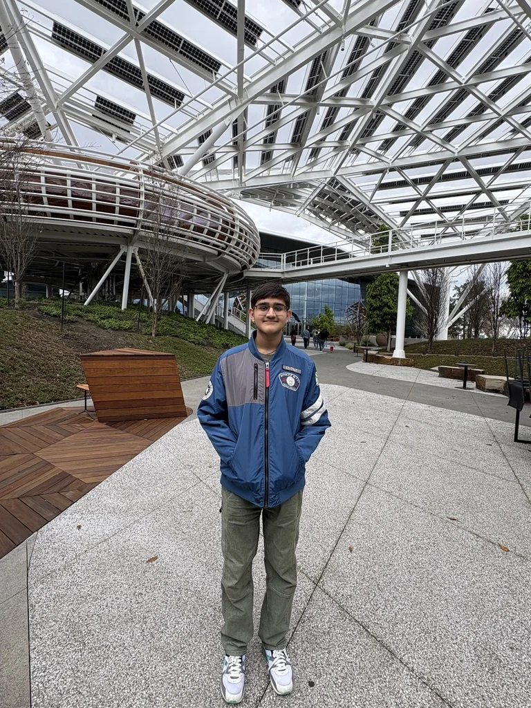
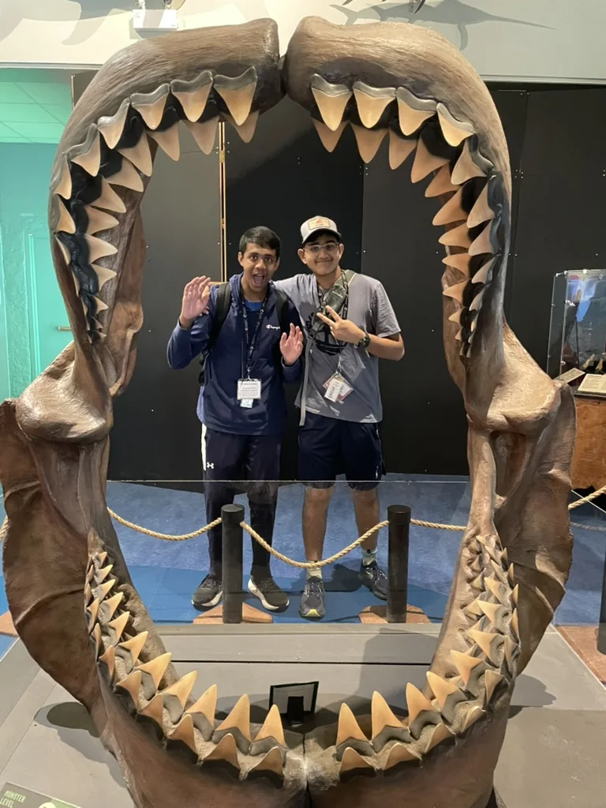

Away from the projects
About
me.
I'm Abhi. I spend a lot of my time programming robots, and I enjoy building projects that other people can use.
I'm in Grade 12 in Oakville, Ontario. Outside my projects, I enjoy biking and spending time with friends. I've been collecting Transformers for years, and I still design little accessories for them.

Where it started.
I was interested in electronics long before high school and liked making small projects at home. I joined Team 1360's FIRST community in 2019 through LEGO League. I later moved into FRC in 2022.
In FRC, I got to work on robot software while learning more about the hardware it controlled. I became Programming Lead for the 2025 and 2026 seasons.

More than my work.
When I'm not building something, I like getting outside on my bike, spending time with friends, and exploring places that catch my interest. Scouts has been a big part of my life, both for the outdoors and for the people I've met.
I've collected Transformers for years, and I've been into dinosaurs and paleontology since I was little. I like learning about all sorts of things, even when they have nothing to do with engineering.

For the technical side of things:
Explore my work ↗